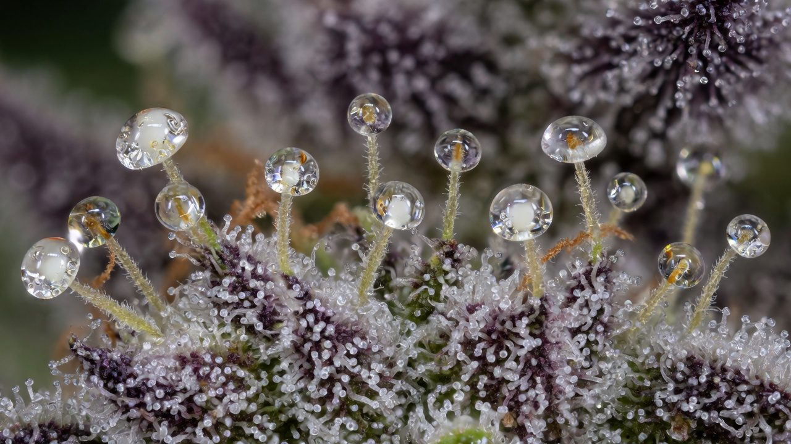
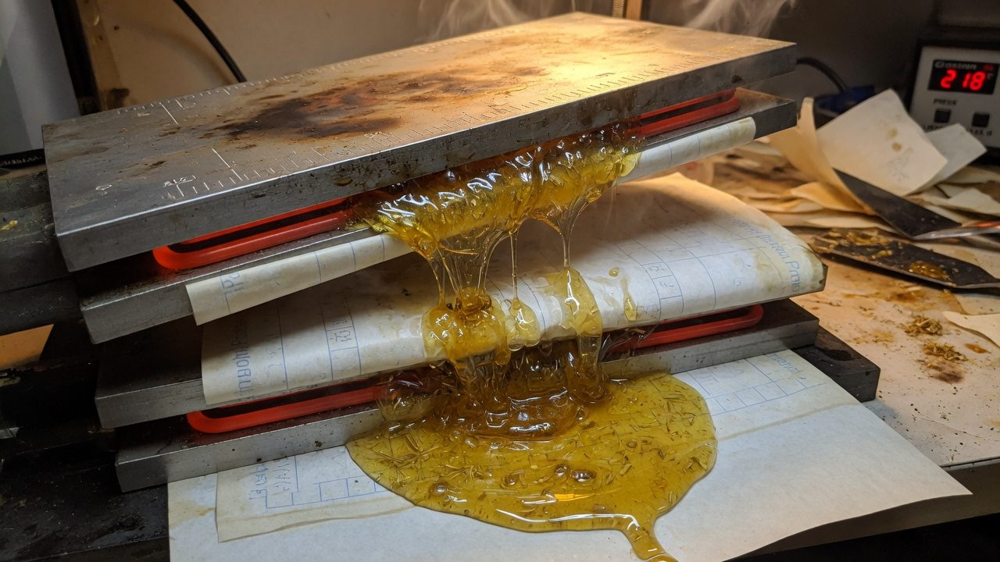
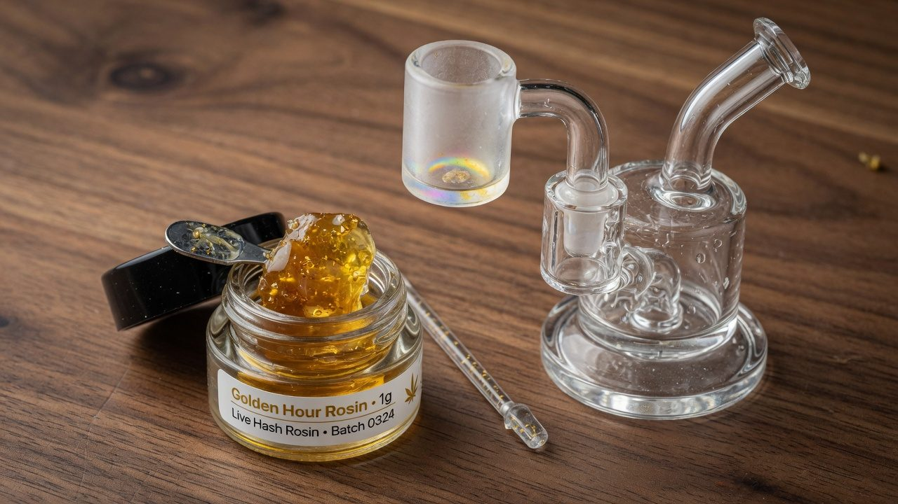
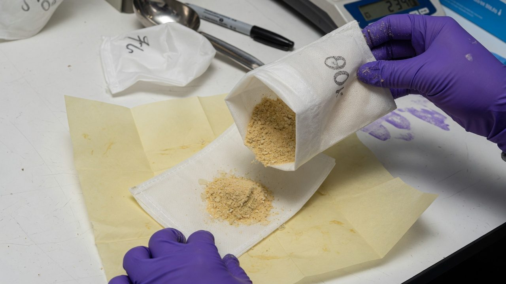
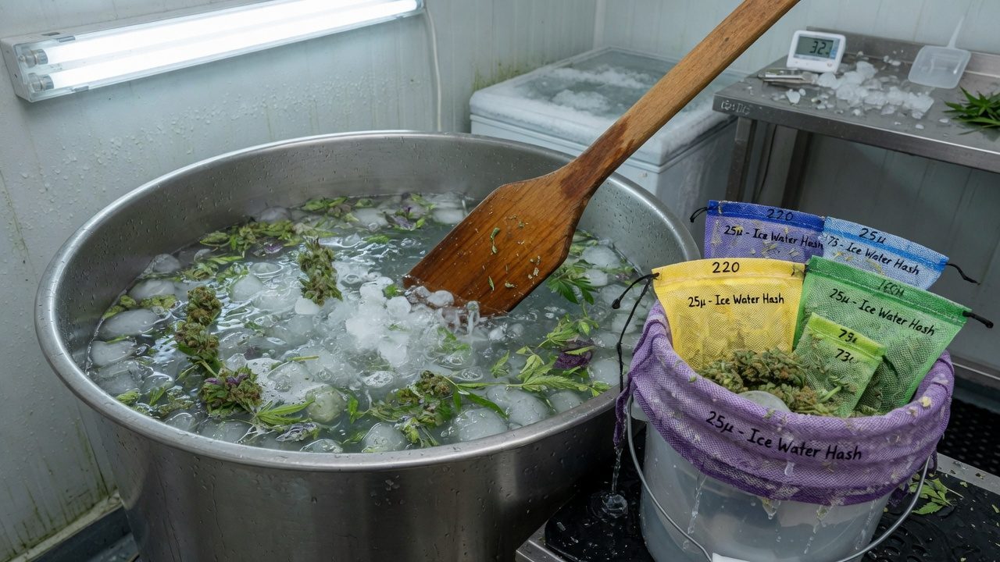
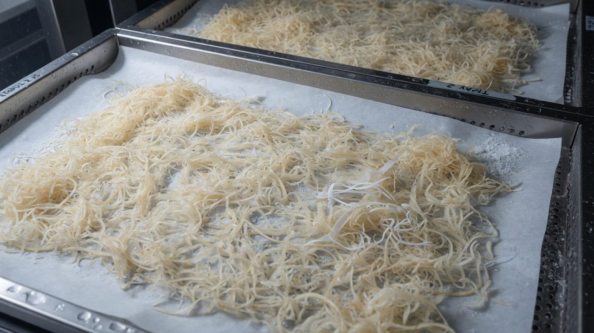
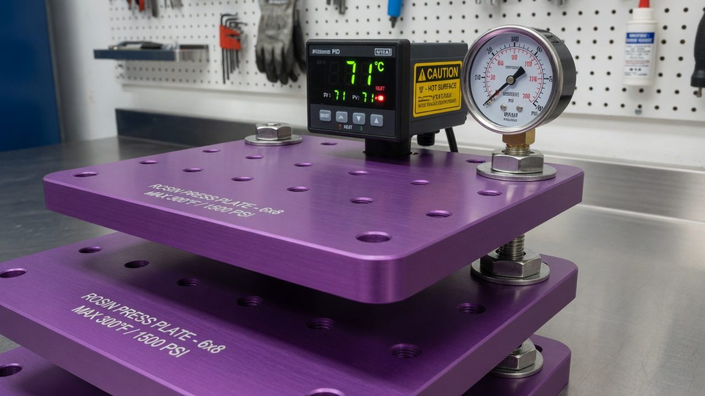
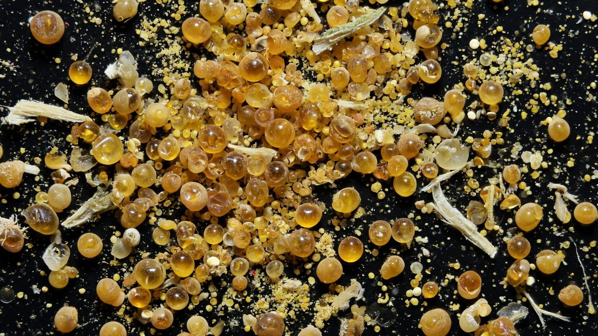
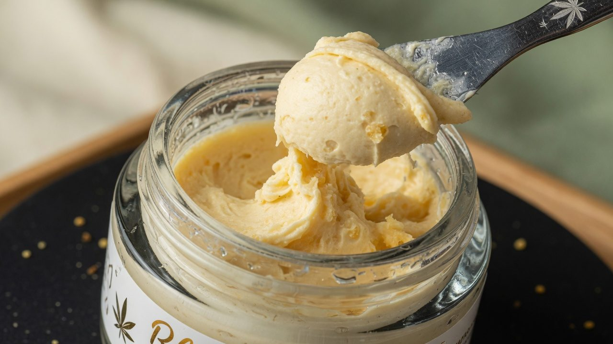
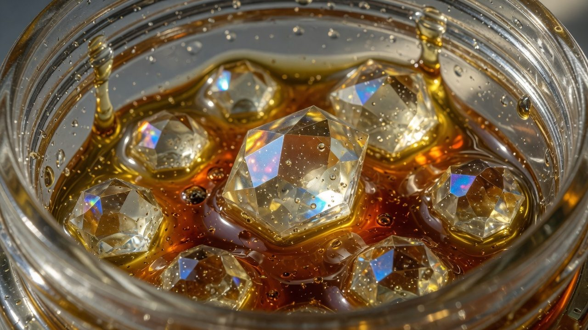

Hash rosin, pressed: a solventless systems guide
Rosin is mechanical, not chemical: heat, pressure, time and a micron screen acting on a material whose quality ceiling was already fixed upstream, at harvest, in the wash, in the dry. This guide maps the whole chain, trichome to dab.
Rosin in Plain English
A cannabis plant is covered in thousands of tiny, mushroom-shaped glands called trichomes, the frosty ‘crystals’ you can see on good flower. Each trichome head is a microscopic sac of resin: the sticky oil that carries almost all of the plant's potency, smell and flavour. Every solventless concentrate is really just those heads, collected and then gently squeezed, with no chemical solvents like butane or alcohol anywhere in the process.
It happens in two halves:
- Make the hash. Knock the trichome heads off the plant and gather them into a powder or paste. Two common ways: stir the plant in ice water so the brittle heads snap off and sink (bubble hash), or rub dried plant over fine screens (dry sift).
- Press the hash into rosin. Seal the hash in a small mesh bag and squeeze it between two gently heated metal plates. Heat softens the resin; pressure pushes it out through the mesh as a golden oil. That oil is rosin.
That is the whole idea, heat + pressure, no solvents. The craft is in restraint: too much heat boils away the flavour, and too much force bursts the bag and pushes plant matter through the mesh. After pressing, the rosin is cured (rested under controlled warmth or cold) to set its final texture, then either dabbed (a small dose flash-vaporised on a hot surface and inhaled) or loaded into a vape cartridge.
The press cannot add quality. It can only lose less of it. Your starting material (the genetics, the harvest, the wash) sets the ceiling. Heat, pressure, time and mesh size only decide how close to that ceiling you land.
From here on, the guide treats the press as a set of levers you can pull, temperature, pressure, time and mesh (‘micron’) size. And shows what each one does to yield and quality, what goes wrong, and how to fix it. Hit a word you don't know? Jump to the glossary at the end.

Accuracy, self-review, and grain-of-salt notes
We've gone to great lengths to keep these guides honest. One of the main ways we do that is self-review: we actively look for claims that are subjective, only lightly backed by literature, or based on grower practice rather than a controlled study — and we call those out instead of dressing them up as settled science.
Often there simply is no paper for the decision you're making. In those cases we're drawing on what other growers report and what has worked in our own rooms. That can still be useful — but it is not a lab proof. Do what works for your plants, your room, and your meters. If a table disagrees with your crop, believe the crop and log the difference.
- Core definitions and measurement units used in the paper
- Safety-critical limits where occupational or standards sources are cited
- Numeric stage targets (light, climate, feed) as starting bands, not laws
- SOPs that work in many rooms but need your genetics and meters
- Any single-number 'guaranteed' yield or potency claim without a multi-site trial
- Controller setpoints copied from another facility without re-calibration
See something glaringly wrong? Tell us and we'll fix it. Please open a GitHub issue with the paper name and what looks off (include a source if you have one): Report an accuracy issue. Local law, labels, and licences always override any recipe here. Inline notes labelled grain of salt flag the highest-risk over-trust points in the text.

Core Answer
A rosin press has only four levers (heat, pressure, time and screen (micron)) and they all negotiate a single tension: yield versus quality (terpene retention, colour, clarity)[1]. Heat lowers resin viscosity so it flows; the micron bag decides what flows with it (pure trichome oil, or fats and plant matter too); pressure and time only push the process along[2]. None of them can lift the ceiling set upstream.
You cannot press 6-star rosin from 3-star input. The wash, the dry and the grade fix the maximum; the press and the cure only preserve or squander it. Hash presses cooler than flower, and clean full-melt hash blows out if you rush the pressure.
So the whole craft reduces to: fix the input, pick the product, choose a micron that matches the trichome heads, set the lowest temperature that still flows, ramp pressure only to finish the flow, collect cold, and cure for texture.

The Pipeline at a Glance
Hash rosin is the back half of a longer chain. Cold-chain steps (where heat is the enemy) are marked in blue in the map below; the press and the cure are where heat becomes a tool.
- 1HarvestCut at 80–90% cloudy trichomes, at lights-off.
- 2Freeze or dryFresh-freeze for live products; slow-dry for dry sift.
- 3Wash or siftIce-water hash or dry-sift screens, cold room, gentle hands.
- 4Dry the hashFreeze-dry, or cold air-dry as the budget option.
- 5GradeMelt-test and star-grade 1–6★; the grade decides the product options.
- 6ConditionMoisture check and pre-chill; pre-press pucks for flower and sift only.
- 7PressPreheat, slow ramp, hold to flow-stop.
- 8CollectCold tool, fresh parchment, straight into chilled glass.
- 9Pick the product pathBadder, sauce, diamonds, cart oil or hash-hole core.
- 10CureCold-cure, warm-cure or a staged crystallisation.
- 11StoreSealed glass, cold, dark.
The stage deep-dives later in this paper break each step down with its own parameters. The matrices and failure modes tell you which lever to move when a stage goes wrong.

Starting Setpoints by Input Material
Where to begin for each of the four input materials. These are starting points to dial in from, not targets to chase[7]. Temperatures are platen temperature; press to flow, not to the clock. Hash sits cooler than flower because its trichome heads are already isolated and need only enough heat to melt resin[1].
| Input material | Bag micron | Plate temp | Band (°C) | Dwell (s) | Pressure approach | Pre-press | Typical products |
|---|---|---|---|---|---|---|---|
| Dried flower | 90 µm (75–160) | 88 °C | 82–93 | 90–180 | Low–medium; slow 30–60 s ramp as resin flows, then ease to firm contact | Yes | Badder, fresh press; carts at 75 µm |
| Dry sift / kief | 72 µm (25–90 by grade) | 82 °C | 71–88 | 60–90 | Low; add time, not pressure. Finer material already has good contact | Yes | Badder, diamonds |
| Fresh-frozen hash (5–6★) | 36 µm (25–45) | 71 °C | 60–77 | 60–180 | Very low; add heat only if flow stalls. More pressure is NOT better. It pushes fats through | Cold puck only | Live rosin, cold-cure badder, live diamonds, carts, hash holes |
| Dried / cured bubble hash | 45 µm (25–90 by grade) | 77 °C | 71–82 | 60–120 | Low; a few °C hotter than full-melt to coax flow, but stay gentle | Cold puck only | Badder, diamonds, carts |
Cold-cure hold (post-press, not platen): 10–21 °C for days to ~2 weeks, sets creamy badder while keeping volatile terpenes[8]. Low-temp press (flavour): 60–85 °C, max terpene retention, lightest colour; hash ~60–77 °C, premium flower ~82–88 °C. Balanced sweet spot (flower): 88–99 °C, strong yield, minimal terpene loss; a good default for unknown flower. High-temp press (yield / sauce / carts): 99–104 °C, max yield, fastest flow, darker; use it to rescue degraded material[7].
Known, Assumed, Unknown
Knowns (settled)
- Lower platen temperature preserves terpenes and colour; higher temperature buys yield and flow at their expense[1].
- A tighter (smaller-micron) bag yields cleaner, lighter rosin at lower yield; a coarser bag does the reverse.
- Hash and dry sift press cooler than flower. Their heads are already separated from plant matter.
- Sealed heat preserves terpenes better than open-air heat: a sealed headspace saturates so net evaporation stops, while open air oxidises and strips them[13]. The lightest monoterpenes are the most volatile and go first[16].
- Only THCa crystallises into diamonds; once decarboxylated to THC it stays liquid[5]. Carts need full decarb, diamonds need preserved THCa.
Assumptions this guide makes
- Your hash is well-made and properly dried (freeze-dried or correctly cold-dried) before it reaches the plates.
- Your press holds temperature accurately (PID or app-controlled) and applies even heat across both plates.
- You work clean and cold, and you log runs so you can move one lever at a time.
Unknowns that change the exact numbers
- Trichome head size & distribution, cultivar-dependent; dictates the micron more than anything else.
- Lipid / wax load, varies by genetics and material type; flower carries more than hash.
- Crystallisation tendency, the terpene-to-THCa ratio decides how readily (or stubbornly) diamonds form.
- Exact moisture, a few points of RH swing flow, clarity and blowout risk.
The Press as Four Coupled Balances
Like a grow room, a press is best read as a few coupled balances rather than independent knobs. Move one and the others shift.
All four balances feed one trade: yield ↔ quality. Almost every adjustment trades one for the other. Decide which you are optimising before you touch a lever.
Lever Inventory
The full set of controls, grouped by where they sit in the chain. Upstream levers cap the ceiling; press levers set the trade; finishing levers set the texture.
Upstream / material levers
| Lever | What it controls | Direction of effect |
|---|---|---|
| Trichome maturity | Potency & terpene profile at harvest | Cloudy = peak; clear = immature / low yield; amber = degrading |
| Fresh-frozen vs cured | ‘Live’ terpene profile vs stability | Fresh-frozen = highest monoterpenes, presses coolest; cured = a touch warmer to flow |
| Wash / sift quality & melt grade | Head purity (the star rating) | Higher grade → cleaner melt, higher yield, can press cooler & tighter |
| Micron fraction collected | Which head sizes you kept (73–120 µm = gold) | Full-melt fractions press cleanest; off-fractions add colour and contaminant |
| Moisture / RH | Water content of the input | Too dry = poor flow and yield; too wet = haze, emulsion, blowout |
| Cultivar | Head size, lipid load, crystallisation tendency | Sets the micron, the blowout risk and how readily diamonds form |
Press levers
| Lever | What it controls | Direction of effect |
|---|---|---|
| Plate temperature | Resin viscosity / flow | ↑ yield and flow; ↓ terpenes and lightness |
| Applied force / effective PSI | Drive through the screen | ↑ yield to a point, then ⚠ blowout & contaminant pass-through |
| Dwell time | How long under heat + force | ↑ yield; ↓ terpenes with prolonged heat |
| Ramp profile | How fast you reach target force | Slow ramp = fewer blowouts, cleaner flow; fast ramp = rupture risk |
| Micron bag | Screen selectivity (the gate) | Tighter ↑ purity, ↓ yield; coarser the reverse |
| Fill / loading density | Flow path & pressure distribution | Even, air-free fill → even flow, fewer channels and blowouts |
| Pre-press | Forms a dense, air-free puck | Reduces channeling and blowouts (flower / sift); skip for full-melt hash |
| Plate size vs load | Heat coverage & throughput | Match to batch, overfilling cold edges chokes flow |
Finishing levers
| Lever | What it controls | Direction of effect |
|---|---|---|
| Collection temperature | Texture lock at the parchment | Cold collection preserves terpenes and sets cleaner textures |
| Cure type / temp / time | Final consistency | Cold cure → badder; warm cure → sauce; staged → diamonds |
| Agitation / whip | Homogenisation & nucleation | Whipping drives budder; over-whipping warms the mass and dulls terps |
| Nucleation trigger | Whether / when it crystallises | Cold cure or gentle heat + stirring starts nucleation |
| Decarb | THCa → THC for carts | Required for carts; destroys diamond potential |
| Storage | Shelf preservation | Cold, dark, airtight = terpene and cannabinoid retention |
Main Lever Interaction Matrix
What happens to each outcome when you turn a press lever up (or, for micron, tighter). Direction of effect, all else held equal. ↑ = increases / improves, ↓ = decreases / darkens, → = little change, ⚠ = raises risk.
| Lever moved → | Yield | Terpene retention | Colour (lighter) | Clarity | Blowout risk | Texture shift |
|---|---|---|---|---|---|---|
| ↑ Plate temp | ↑ | ↓ | ↓ | ↑ (thinner oil runs cleaner) | ↓ | toward sap / shatter |
| ↑ Pressure / force | ↑ to a point | → | ↓ if forced | ↓ (pushes fats & fines) | ⚠ ↑↑ | wetter / contaminated |
| ↑ Dwell time | ↑ | ↓ | ↓ | → | → | more decarb / sappier |
| ↓ Micron (tighter bag) | ↓ | → | ↑ | ↑↑ | ⚠ ↑ (more restriction) | cleaner, stiffer |
| ↑ Moisture (wetter input) | ↑ then ↓ | → | → | ↓↓ (haze / emulsion) | ⚠ ↑ | unstable / greasy |
| ↑ Pre-press density | ↑ | → | → | ↑ | ↓↓ safer | even flow |
The pattern to internalise: temperature and micron are your quality levers; pressure and time are your finishing levers. Reach for heat and screen first; use force only to complete a flow that heat has already started[2].
Symptom-to-Parameter Matrix
Read a result, find the lever that moved too far, make the one corrective change. Adjust a single lever per run so the next result is interpretable.
| You observe | Lever that moved too far | Corrective change |
|---|---|---|
| Low yield, oil won't flow / reabsorbs | Temp too low · material too dry · pressure too low · screen too tight | +3–6 °C; check moisture; firmer, slower ramp; open the micron one step |
| Dark or green rosin | Too hot · over-pressed · contaminated input | Drop temp; gentler ramp; tighten micron; start from a cleaner grade |
| Hazy, cloudy or ‘wet’ rosin | Excess moisture / lipids | Dry & condition the input; cooler press; tighter bag |
| Flat, weak nose | Temp too high · dwell too long · hot collection | Cold-press band; shorten dwell; collect cold; seal immediately |
| Bag blowout | Pressure too fast · overfilled · micron too coarse for the heads · no support sleeve | Slow 15–20 s ramp; 120–160 µm outer sleeve; smaller load; match micron to head size |
| Stays sappy, won't butter | Not nucleated | Cold-cure sealed jar 13–16 °C, 24–72 h |
| Auto-budders fast / greasy | Residual moisture in the input | Dry the hash more thoroughly before pressing |
Worked Example: Raising Plate Temp +6 °C
A single nudge cascades. Take full-melt fresh-frozen hash and raise the platen from 71 °C → 77 °C, holding everything else constant.
Lever pulled
Plate temperature +6 °C, still inside the hash band (60–77 °C), 36 µm bag, gentle ramp.
Immediate effects
- Resin viscosity drops, the seam wets sooner and oil runs faster.
- Yield rises; less oil is left trapped in the puck.
- Blowout risk falls slightly, thinner oil escapes before pressure has to build.
Secondary effects
| Knock-on | Direction | Why |
|---|---|---|
| Terpene retention | ↓ | Volatile monoterpenes (α-pinene, myrcene) start leaving as temperature climbs[16] |
| Colour | ↓ darker | More thermal exposure deepens amber |
| Texture | budder → sap | Hotter rosin sets saucier; slower to butter |
| Cure behaviour | slower nucleation | Higher temp keeps more in solution; a cold cure takes longer |
Rescuing lower-grade or cured hash that won't give up its oil; pushing for sauce, diamonds or cart feedstock where a little terpene trade is acceptable for flow and yield.
Pressing 5–6★ fresh-frozen for a terpene-forward live badder. Here those six degrees trade your nose for a few points of yield, a bad deal. Stay at 71 °C and accept the lower number.


Stage Deep-Dives
The full farm-to-dab chain, stage by stage, with the parameters that matter at each. Everything before the press is a cold-chain step where heat is the enemy.
Harvest & trichome maturity
Everything downstream is capped here. The common practice target is 80–90% milky / cloudy capitate-stalked trichomes with 10–20% amber and zero clear, a preference band, not a hard rule, and hash-makers often run less amber because amber heads press darker and greasier. Harvesting at lights-off is common practice rather than settled science. For dry sift, lean slightly earlier, overripe stalks turn brittle and fragment into contamination[10].
Fresh-freeze vs dry / cure
- Fresh-frozen (for live / ice-water hash): flash-freeze whole, undried material immediately after cutting. It locks in the living monoterpene profile; this is what presses coolest and cleanest.
- Slow dry (for dry sift): whole-plant hang at 15–18 °C, 55–60% RH, complete darkness, gentle airflow, 10–14 days. Target stems that snap (not bend), water activity 0.58–0.62 aw (0.55–0.65 is the safe band; at 0.55 you are already at the overdried boundary). Then freeze the trimmed material 4–6 h (ideally 24 h) so the stalks snap cleanly[10].
Ice-water wash (cold chain)
For bubble hash, agitate fresh-frozen material in near-freezing water so trichome heads break free and sink through a micron bag stack[14].
| Parameter | Target | Note |
|---|---|---|
| Water temperature | ≤ 4 °C | Add ice; RO / distilled water keeps it clean. Cold keeps heads intact and brittle |
| Work bag | 220 µm | Holds plant material; heads pass through into the stack below |
| Collection stack | 160 · 120 · 90 · 73 · 45 · 25 µm | Full-melt heads live in 73–119 µm (sweet spot 73–90 µm); 120–160 µm is mid-grade; <45 µm is fine-grade |
| Agitation | Gentle, 1–5 min per wash | Hand-stir or low-speed machine; gentler = cleaner heads |
| Cycles | 2–4 washes | The first wash is gentlest and highest quality; later washes give more, dirtier yield |
Dry-sift alternative (cold chain)
No water, work frozen material across a descending screen cascade in a cold room (below 10 °C), carding gently 3–5 min per pass[10].
- Screen stack: 140 µm (110 LPI) work screen → 107 µm → 70 µm (200 LPI) ‘money’ screen (70–120 µm heads are the gold) → sub-70 µm catch (edible grade).
- Static glove tek: on a 70 µm (200 LPI) screen, sweep a freezer-chilled black nitrile glove in smooth circles. Static lifts pure heads and leaves contaminants behind. Whisk off, re-chill, repeat 3–5 passes. Hover and sweep; never mash[4].
Drying the hash (cold chain)
- Freeze-dry (lyophilise), best: condenser −40 to −50 °C, vacuum ~100–200 mTorr (below ~500 workable), 24–48 h until fully dry. Removes water without heat or oxidation.
- Cold air-dry, budget: microplane the patties onto parchment or screens and dry in a cold room over 24–72 h. More oxidation and contamination risk; watch for mould.
Grading & moisture conditioning
Melt-test on a hot nail and grade 1–6 star (6★ = 95%+ heads, full melt). The grade sets which products are open to you and how tight and cool you can press. Pre-chill the hash and the bag before pressing, cold material in the bag means fewer blowouts.
| Grade | Purity | Use |
|---|---|---|
| 6★ full melt | 95%+ heads | Dab direct; premium rosin; cart grade |
| 5★ near full melt | 85–95% | Excellent rosin; cart grade with good pressing |
| 4★ half melt | 70–85% | Good rosin; may need more cleaning for carts |
| 3★ | 50–70% | Cooking grade, or needs cleaning |
| 1–2★ | <50% | Edibles only, too contaminated for rosin |
Worth knowing: many hash-makers treat 3–4★ as the classic pressing grade and keep true 5–6★ full-melt to dab as-is[1]. It already melts clean without a press. Pressing full-melt into rosin is a choice about texture and product form, not an upgrade.
Pre-press & bag loading
- Load 2–7 g into the inner bag; fold the open end over twice. Don't overfill, leave room for flow.
- For diamonds / mech-sep and any blowout-prone run, sleeve the inner bag inside a 120–160 µm support bag.
- Flower and sift: form a dense, air-free pre-press puck to stop channeling. Full-melt hash: no heated pre-press, at most a gentle cold-formed puck to consolidate the load; melty high-grade material flows without one.
- Place in folded parchment, open seam facing out toward you.
The press
- Pre-heat the closed (or near-closed) plates against the bag 30–60 s, no pressure.
- Slowly ramp force over 15–20 s, watching for the seam to wet and oil to run.
- Hold at working force 60–120 s (up to 180 s) or until flow stops, press to flow-stop, not to a number[2].
- Release. Yield from clean 5–6★ input typically runs 60–80%[3] — if you're under 50% on good input, something upstream is wrong.
Collection (cold chain)
Collect immediately with a cold dab tool onto fresh parchment, then into pre-chilled glass; seal. Cold collection preserves terpenes and sets a cleaner texture. Move straight to your product path.

Equipment-Specific Effects
Each tool exposes its own sub-levers. Match the press class to the batch size, and favour accurate temperature control for low-temp work.
Press class
| Class | Force | Batch | Best for | Note |
|---|---|---|---|---|
| Manual lever | 0.5–5 t | 0.5–12 g | Personal → craft | Fine for small hash runs; force is harder to hold steady |
| Hydraulic | 5–25 t | 4–150 g | Craft → commercial | The workhorse; pair with PID plates for accuracy |
| Pneumatic | 5–8 t | 7–35 g | Craft → commercial | Smooth, repeatable ramp, ideal for gentle hash pressing |
| Electric / hybrid | 0.75–20 t | 1–115 g | Personal → commercial | Hands-free; app / PID control for tight low-temp accuracy |
Plates, bags & cold-chain gear
| Tool | Lever | Effect |
|---|---|---|
| Plates & heat zones | PID accuracy, even heat | Tight, even temperature = predictable flow and colour; cheap plates swing and scorch |
| Micron bag | Mesh size (the gate) | Hash 25–45 µm (full-melt) to 90 µm (lower grade); flower 75–160 µm; sift 25–90 µm |
| Support sleeve | 120–160 µm outer bag | Backs the inner bag against rupture, the main blowout defence |
| Pre-press mould | Puck density & shape | Even, air-free puck → even flow; flower and sift only |
| Wash vessel & bags | Agitation, micron stack | Gentle agitation + a clean stack = cleaner heads |
| Freeze dryer | Condenser temp, vacuum, time | Heat-free drying preserves the live profile; the quality default for hash |
| Collection & storage | Cold tool, sealed glass, fridge | Cold collection + cold, dark, sealed storage = terpene retention |

Input / Trichome Interaction Matrix
Read the material, under a loupe or scope, and let it pick the settings. The micron is dictated by head size and debris, never chased for its own sake.
| Material / trichome read | Bag micron | Plate temp | Ramp | Best product |
|---|---|---|---|---|
| Heads >100 µm, low contaminant | 90 µm (115 if very clean flower) | cold end | gentle | Badder |
| Heads 70–100 µm | 45–73 µm | 88–99 °C flower / cooler hash | moderate | Badder / live |
| Heads <70 µm or high fines | 25–37 µm | slightly higher to push through | slow, don't overfill | Careful, blowout-prone |
| Mostly cloudy + high intact % | match head size | 71–85 °C | gentle | Cold-cure badder |
| Low intact % (ruptured / degraded) | match head size | 99–104 °C, shorter dwell | moderate | Carts / sauce |
| High contaminant % | tighter (25–37 µm) | + a few °C | firm pre-press, slow ramp | Recover, don't chase melt |
| Fresh-frozen hash (clean, large heads) | 36–90 µm | 60–85 °C | gentle | Live rosin |
Small heads and fines escape or channel a coarse screen, the classic blowout trigger. Tighten the micron, slow the ramp, and don't overfill.


Post-Press Product Paths
The same fresh-pressed rosin diverges into every solventless product through the finishing levers. The press setpoint sets the starting oil; the cure sets the destination.
| Product | Press setpoint | Cure / finish | Result |
|---|---|---|---|
| Fresh-press live rosin | Cool 60–77 °C (hash) | Use fresh; keep cold | Sappy, terpene-forward |
| Cold-cure badder / jam | Cool press | Sealed jar 10–21 °C, days–2 weeks[8] | Creamy, buttery |
| Sauce | Cool press, then nucleate | Warm cure | Wet, high-terpene |
| Diamonds & sauce (mechanical separation) | Nucleate first (cold cure 13–16 °C) | Progressive press 40 → 46 → 52 → 57 °C[11]; briefly melt the THCa puck to pour (community practice ~120–130 °C, hot enough to start decarb, keep it short); recombine with the sauce to taste (~70/30 is a common ratio) | Clear diamonds in sauce |
| Diamonds (jar / jam tek) | Press clean rosin | Sealed jar: heat 93 °C, 1–2 h, then crystallise at 38 °C for 1–2 weeks[12] | Crystal balls in jam |
| Vape / cart oil | Press clean & cool (low-lipid hash is ideal) | Decarb sealed, low and slow: whole rosin at ~71 °C for ~6 days measured only ~3% terpene loss[13]; hotter sealed decarbs are faster but cost terps[6]. Degas, fridge-test 24 h, fill at ~32 °C[9] | Clear, stable cart oil |
| Hash hole core | Cool 60–77 °C, cohesive full-melt | Roll to a rope while pliable | A donut core that melts clean |
Never start a diamond press hot. At high temperature THCa dissolves into the terpenes and flows out with them, your diamonds leave with the sauce[11]. Progressive low-temp pressing removes terpenes gradually so the THCa runs out of solvent and stays behind. And decarboxylation is one-way[15]: decarbed THC will never crystallise[5].
Sealed decarbs and jam teks pressurise as CO₂ comes off. Standard mason-jar lids self-vent at roughly ~5 psi[13], use jars and lids rated for the job, keep them away from your face, and open only after they've cooled.
Main Failure Modes
Practical Control Hierarchy
Set these in order. Each step constrains the next; skipping upstream steps wastes the downstream ones.
- 1Fix the input ceiling firstGenetics, harvest maturity, wash / sift quality and moisture set the maximum. You cannot out-press bad input.
- 2Pick the productBadder, live rosin, diamonds, cart or hash hole. This choice sets the temperature band and the cure.
- 3Choose the micron from head size & contaminationBig clean heads → coarser; small heads or fines → tighter. Don't chase a small micron for its own sake.
- 4Set the temperature band for material × productThe lowest temperature that still flows. Hash cool, flower warmer, degraded material warmer still.
- 5Ramp pressure to flow, never chase pressureHeat first, force second. Pressure only completes a flow that heat has already started.
- 6Collect cold, then cure to textureCold collection locks terpenes; the cure (cold / warm / staged) decides badder, sauce or diamonds.
- 7Store & validateSeal cold, dark, airtight. Log yield and grade, and adjust one lever next run.
Minimal Operating Matrix for Troubleshooting
Observation → likely cause → first checks. Start at the top. Most problems are upstream of the plates.
| Observation | Likely cause | First checks |
|---|---|---|
| Yield far below 50% on a good grade | Temp / pressure too low, or material too dry | Confirm platen temp; check moisture; firmer slow ramp; +3–6 °C |
| Rosin dark / green | Too hot, contaminated, or over-pressed | Lower temp; verify grade and cleanliness; tighten micron |
| Cloudy / unstable / separates | Moisture or lipids | Check dry and conditioning; cooler press; tighter bag |
| Weak smell / taste | Heat or oxygen exposure | Cooler press; cold collection; sealed cold storage |
| Bag ruptured | Ramp too fast / overfilled / micron too coarse | Support sleeve; slower ramp; smaller load; match micron |
| Diamonds won't crystallise | Cure temp too high, or decarbed / un-nucleated rosin | Drop to ~38 °C; confirm fresh, nucleated, undecarbed rosin |
| Cart clogs / re-crystallises | Incomplete decarb, oil still above ~50% THCa by weight recrystallises | Re-decarb sealed to ≥90% conversion; fridge-test 24 h before filling[6] |
| Results vary run to run | Uncontrolled variables | Log everything; change one lever per run |
The Simplest Mental Model
If you keep only one thing, keep the chain:
Trichome grade & moisture set the ceiling → heat lowers resin viscosity → pressure drives flow through the screen → micron selects what passes (pure oil vs fats and plant matter) → so yield and purity trade against each other → collection temperature locks the texture → the cure decides badder, sauce or diamonds → cold, dark, sealed storage keeps it.
Heat to flow, screen to clean, pressure only to finish, then cure for texture. Quality is set upstream; the press only preserves it or squanders it.
Glossary
Plain-English definitions for the terms this guide leans on. Skim it once and the technical sections read easily.
| Term | Meaning |
|---|---|
| Amber trichome | A resin head aged past its peak, turned amber. A little adds a heavier body effect; too much means lost potency. |
| Badder / batter | A creamy, whipped rosin texture, like frosting. Set by curing and stirring. |
| Blowout | The mesh bag bursting under pressure so raw plant matter floods the oil, ruining the batch. |
| Bubble hash | Hash made by stirring cannabis in ice water so the brittle trichome heads snap off and sink through mesh bags. |
| Capitate-stalked trichome | The large, lollipop-shaped gland that holds the most resin, the prize fraction. |
| Chromatography (reabsorption) | Oil that already flowed out soaking back into the spent material because flow stalled; shows up as poor yield. |
| Cloudy / milky trichome | A head at peak ripeness (peak THCa and terpenes); the target window at harvest. |
| Cold chain | The steps that must stay cold (harvest, wash, dry, collection, storage) because heat degrades quality there. |
| Cold cure | Resting sealed rosin cool (about 10–21 °C) for days to weeks to set a creamy badder. |
| Decarb (decarboxylation) | Heating to convert raw THCa into active THC; required for vape carts, but it destroys diamond potential. |
| Diamonds (THCa diamonds) | Clear crystals of nearly pure THCa grown from rosin, sitting in a pool of ‘sauce’. |
| Dry sift (kief) | Hash made by rubbing dried plant over fine screens so trichome heads fall through; the powder is kief. |
| Dwell time | How long the bag is held squeezed under heat during a press. |
| Effective pressure (PSI) | The force actually felt by the bag (force ÷ bag area). What matters, not the raw gauge number. |
| Emulsion | A hazy, unstable blend caused by water trapped in the oil; the rosin looks cloudy. |
| Freeze-dryer (lyophiliser) | A machine that pulls water out under vacuum while frozen, drying hash with no heat. The quality option. |
| Fresh-frozen | Plant flash-frozen right after cutting and never dried, preserving the ‘live’ aroma; the basis of live rosin. |
| Full-melt | Top-grade hash (5–6 star) pure enough to melt to almost nothing on a hot nail; the cleanest press input. |
| Hash hole | A pre-rolled joint with a core of hash or rosin running down the middle. |
| Lipids / waxes | Natural plant fats that can cloud rosin; flower carries more of them than hash. |
| Live rosin | Rosin pressed from fresh-frozen hash; prized for the most vivid aroma and flavour. |
| Melt / star grade (1–6★) | A quality scale for hash by how cleanly it melts; 6-star is full-melt, 1–2 star is edible-only. |
| Monoterpenes | The lightest, most volatile terpenes (such as pinene and myrcene); the first aromas lost to heat. |
| Nucleation | The moment rosin begins to crystallise or ‘butter up’; triggered by cold, time, or stirring. |
| PID | A precise temperature controller that holds the press plates steady at the set temperature. |
| Pre-press | Forming the material into a dense, air-free puck before pressing, to stop channels and blowouts. |
| Puck | The flattened, spent material left inside the bag after pressing. |
| Sauce | The liquid, terpene-rich oil surrounding THCa diamonds (high-terpene solventless hash oil). |
| Static glove tek | A cleaning trick where a static-charged glove lifts pure trichome heads off a screen, leaving debris behind. |
| THCa / THC | THCa is the raw, non-intoxicating acid in fresh material; heat turns it into active THC. Only THCa forms diamonds. |
| Viscosity | How thick or runny the oil is; heat lowers viscosity so rosin flows. |
| Water activity (aw) | A precise measure of free moisture (0–1) used to judge when flower is properly dried (optimal 0.58–0.62). |
| Yield | How much rosin you get back, usually given as a percentage of the hash weight pressed. |
Setpoints, micron guidance and the trichome-to-press logic in this guide are drawn from the author's solventless knowledge base and operational SOPs, cross-checked against the cited sources. It is a field guide, not a substitute for testing your own material, verify by logging your runs.
References
- The Press Club. Rosin press temperature guide (cold-press vs hot-press bands by material; yield/terpene trade). Industry technical guide, not peer-reviewed. (industry/manufacturer or non-journal source) https://thepressclub.co/blogs/tips-tricks/rosin-press-temperature-guide
- The Press Club. Rosin press pressure guide (effective PSI at the bag; ramp-to-flow technique). Industry technical guide. (industry/manufacturer or non-journal source) https://thepressclub.co/blogs/tips-tricks/rosin-press-pressure-guide
- The Press Club. How to make THCa rosin (yield expectations and separation practice). Industry technical guide. (industry/manufacturer or non-journal source) https://thepressclub.co/blogs/tips-tricks/how-to-make-thca-rosin
- The Press Club. Cleaning dry sift with rubber-glove static tech. Industry technical guide. (industry/manufacturer or non-journal source) https://thepressclub.co/blogs/tips-tricks/cleaning-dry-sift-with-rubber-glove-static-tech
- Lowtemp Industries. How to make solventless diamonds (THCa crystallisation from rosin; decarb destroys diamond potential). Manufacturer knowledge base. (industry/manufacturer or non-journal source) https://www.lowtemp-plates.com/blogs/knowledge/how-to-make-solventless-diamonds
- Lowtemp Industries. How to make 100% solventless rosin cartridges (decarb, degas, fridge test, fill). Manufacturer knowledge base. (industry/manufacturer or non-journal source) https://www.lowtemp-plates.com/blogs/knowledge/how-to-make-100-solventless-rosin-cartridges-lowtemp-industries
- Triminator. Rosin press temperature chart (per-material bands and dwell times). Manufacturer technical guide. (industry/manufacturer or non-journal source) https://thetriminator.com/rosin-press-temp-chart/
- Triminator. How to cold-cure rosin (sealed-jar cold cure for badder; temperature and timing bands). Manufacturer technical guide. (industry/manufacturer or non-journal source) https://thetriminator.com/how-to-cold-cure-rosin/
- Triminator. How to make rosin carts (fill temperature and stability testing). Manufacturer technical guide. (industry/manufacturer or non-journal source) https://thetriminator.com/how-to-make-rosin-carts/
- Richardson M (‘Bubbleman’). Tricks & tips to make full-melt dry sift hash. High Times (140/107/70 µm three-screen method). (industry/manufacturer or non-journal source) https://hightimes.com/grow/tricks-tips-to-make-full-melt-dry-sift-hash/
- Hashtek. Mechanical THCa separation tek (progressive low-temperature pressing, ~105-135 °F; hot starts dissolve THCa into the terpene fraction). Practitioner tek. (industry/manufacturer or non-journal source) https://hashtek.ca/thca-tek/
- Hashtek. Rosin jam tek (sealed jar ~93 °C for 1-2 h, then ~38 °C for 1-2 weeks to crystallise). Practitioner tek. (industry/manufacturer or non-journal source) https://hashtek.ca/jam-tek/
- Hashtek. Decarb experiment: lid vs no lid (sealed 71 °C/142 h decarb lost ~3% total terpenes; open-air decarb lost ~12%, monoterpenes worst; mason lids self-vent ~5 psi). Practitioner experiment. (industry/manufacturer or non-journal source) https://hashtek.ca/decarb-experiment-lid-vs-no-lid/
- The Original Resinator. How to press bubble hash into rosin (wash-to-press workflow). Manufacturer guide. (industry/manufacturer or non-journal source) https://www.theoriginalresinator.com/blog/how-to-press-bubble-hash-into-rosin/
- Wang M, Wang Y-H, Avula B, et al. (2016). Decarboxylation study of acidic cannabinoids: a novel approach using ultra-high-performance supercritical fluid chromatography/photodiode array-mass spectrometry. Cannabis and Cannabinoid Research 1(1):262-271. https://pmc.ncbi.nlm.nih.gov/articles/PMC5549281/
- Eyal AM, Berneman Zeitouni D, Tal D, et al. (2023). Vapor pressure, vaping, and corrections to misconceptions related to medical cannabis' active pharmaceutical ingredients' physical properties and compositions. Cannabis and Cannabinoid Research 8(3):414-425. https://pmc.ncbi.nlm.nih.gov/articles/PMC10249740/
Citations marked in-text as [n] map to this list. Primary literature and official guidance except where noted. Cannabis tissue culture is strongly genotype-dependent, verify dilutions, hormone doses and local regulations against the primary sources before relying on them.